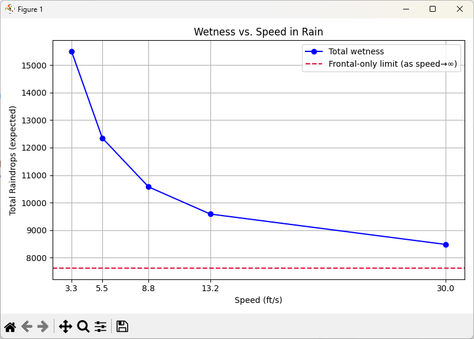

Should You Walk or Run in the Rain? The Puzzle That Sparked a Passion
Early in my programming career, I came across a coding challenge that stuck with me for many years:
“If it’s raining, will you stay drier by walking or running through it?”
At the time, I didn’t have the skills to simulate the problem properly. It became one of the first exercises that nudged me toward a lifelong fascination with modeling the real world through code. The problem wasn’t about recursion or memory management. It was about getting wet, and how fast you move through falling rain.
The Thought Experiment
Imagine you’re 500 feet from shelter. It’s raining. No umbrella. You have two options:
- Walk - exposes you to more rain from above.
- Run - reduces vertical exposure but increases the number of raindrops hitting your front.
Which gets you wetter?
The paradox lies in competing intuitions:
- More time in rain = more wetness.
- Moving faster = more frontal exposure.
What made this problem compelling was that there wasn’t an obvious answer and no way (back then) to definitively prove which effect dominated. It was a thought experiment we debated endlessly with hand-waving.
But now, with Python, generative AI, and a (virtual) rainy afternoon to spare, I can finally simulate this problem to know the answer.
Modeling the Rain
To simulate the problem accurately (but tractably), we make the following simplifications:
Assumptions:
- Rain falls vertically at a constant rate (no wind).
- Rain falls vertically at a uniform density.
- You’re a rectangular block moving at constant speed.
- Getting wet = the number of raindrops hitting you from the top and the front.
- Rain hits the top based on time exposed, and the front based on distance traveled.
- Rain from behind and sides is ignored.
This converts the real-world complexity into a discrete physical model driven by surface area, velocity, and time.
Using AI to Generate the Simulation
Instead of starting from scratch, I begin by asking a generative AI model to help scaffold the solution.
Write a Python simulation to model how wet a person gets in the
rain depending on their walking or running speed. Assume a
person is a rectangular block with a top area and front area.
Rain falls vertically at a steady rate. Calculate drops hitting
the top (time exposed) and front (distance traveled).
The model produces a solid draft. As with most AI-generated code, it needs refinements, such as naming consistency, unit correctness, and clearer abstractions. But that initial generation saved me from boilerplate and gave me a starting point. What follows is the refined version.
|
|
Simulating the Tradeoff: Walking vs. Running
Here, I used AI again. I asked it to extend the simulation with a loop that tested speeds from walking pace up to sprinting. The prompt was short:
Using the simulate_wetness function, generate Python code to loop over
a list of speeds (ft/s) and print out the resulting wetness.
The model produces usable code that I edit for clarity and readability.
|
|
Sample Output:
The following sample output shows that the trend is clear: faster movement reduces overall wetness, but with diminishing returns.
Speed: 3.3 ft/s -> Wetness: 15510 drops
Speed: 5.5 ft/s -> Wetness: 12348 drops
Speed: 8.8 ft/s -> Wetness: 10570 drops
Speed: 13.2 ft/s -> Wetness: 9582 drops
Speed: 30.0 ft/s -> Wetness: 8476 drops
Making the Results Visual
For visualization, I didn’t ask AI to just “plot it.” Instead, I prompted:
Add a matplotlib function that plots wetness vs. speed, including
a horizontal asymptote for the minimum frontal-only exposure.
This prompt yields the basis of the plotting function below, which I then fine-tune by adjusting labels, colors, and legend placement.
|
|

The Verdict
Running gets you less wet, consistently. The longer you spend under the rain, the more water lands on your head and shoulders. By running, you reduce that exposure time, which significantly cuts down on the amount of rain hitting you from above.
However, there’s a tradeoff. As you speed up, you collide with more raindrops from the front. At first, the gains from reduced top-down exposure far outweigh the cost of increased frontal hits. But as your speed continues to climb, you start to hit a point of diminishing returns: you’re still getting wetter from the front, and there’s less time savings left to gain. No matter how fast you go, you’ll always collide with some rain from the front, but you can reduce how long rain hits you from above.
Exercises for the Reader
When I started writing books, an old friend of mine joked that technical authors often cover the basics while leaving the more difficult problems as an “exercise for the reader.”
In that same spirit, here are some ideas to extend this rainy-day simulation. They’re grouped into levels, from easy tweaks to more advanced experiments that add realism or mathematical depth.
Pro tip: Try phrasing each extension idea as an AI prompt. For example: “Modify the simulation to treat the person as a cylinder instead of a block.” Then, refine the AI’s output to ensure it matches the math.
Beginner Level: Quick Fixes & Calibration
-
Unit check: Verify that each term in the wetness equation resolves to “drops.” Work through the dimensional analysis: intensity is in drops/ft²/s, areas are in ft², distances are in ft, and speeds are in ft/s. Making sure these cancel properly is a good exercise in unit consistency.
-
Real rainfall: Let the user input rainfall in inches/hour (e.g., 0.1, 0.5, 1.0). Convert this to drops/ft²/s using the helper function and an assumed drop diameter. Compare light drizzle vs. heavy downpour to see how much the totals scale.
-
Validation: Add input checks to ensure negative speeds or distances can’t be passed into
simulate_wetness. You could raise exceptions with clear error messages or clamp inputs to realistic ranges. Try testing with edge cases likespeed=0ordistance=0to confirm behavior.
Intermediate Level: Geometry & Body Modeling
- Cylindrical person: Replace the box model with a cylinder (height, radius). Compute the top area as πr² and the front area as height × 2r. Compare wetness outcomes from this smoother shape versus the rectangular one, and discuss which feels more realistic.
- Hunch angle: Add a tilt angle that decreases top area and increases frontal area. You can use simple trigonometry to project the areas based on the angle. Plotting wetness across different posture angles could reveal the “best” stance in the rain.
- Variable distance: Run scenarios at 50, 200, 500, and 1000 ft to see how distance affects strategy. Short distances might not justify sprinting, while long distances magnify the benefits. Make a table or plot that compares these cases.
Advanced Level: Environment & Stochasticity
- Wind: Add a horizontal wind component. Now raindrops fall at an angle (vector ((u, 0, -fall_speed))), so the effective frontal area changes. This turns the simple vertical model into a 3D vector problem. You’ll see that wind can make running sideways into the rain much worse.
- Monte Carlo rain: Instead of continuous flux, simulate drops randomly with a Poisson process in space-time. Each drop has a chance of hitting the person’s projected area. Run many trials and average the results to approximate the analytic model. This adds randomness to the story.
- Drop size distribution: Sample raindrop diameters from a realistic distribution (meteorology papers often use log-normal). Larger drops carry more volume and can be weighted more heavily in the wetness score. Try mixing small drizzle with a few large drops to see how totals shift.
Why I Chose This as My First Post
This problem isn’t just about physics or weather. It’s about thinking like a programmer, and today, thinking like a programmer includes understanding how to use AI effectively.
Yesterday, we memorized programming patterns. Today, we craft AI prompts, evaluate the generated code, and adapt it to real-world needs. The skills are different, but the spirit of curiosity and modeling remains the same.
Over the past many years, that mindset of modeling uncertainty, isolating variables, and iterating toward insight has shaped everything from how I write software, author technical content, and how I approach AI and automation today.
If you enjoyed this, stay tuned. I’ll be sharing insights on solving similar puzzles, Python programming, AI prompting, OpenAI, MCP servers, and LLMs.